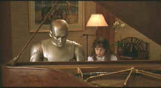

| Bicentennial Man/C,A |
| Touchstone/1999/131/ANA 1.85 |
The
placid expression on my
face seldom changed as I sat through Bicentennial Man .
Sharp production design was mesmerizing and the enchanting quality of the DVD
transfer hypnotic, but beyond that, not much seemed to happen.
That's right, despite a 200 year journey through the existence of one
robot, nothing much does happen.
Okay, this is no ordinary robot. This advanced
model aspires to human emotions. Robin Williams is the modern day
tin man, a robot with a sense of humor, to be sure, but a far deeper
desire to mine the tear ducts. Williams captures all the staccato
mannerisms and wonder of a robot discovering himself, but for all
the robot desire in the world can't make this Robin sing like a man.
Chris Columbus is a director with a true sense of
wonder, but I think Bicentennial Man needed more of an edge.
Columbus's style was perfected mated with Mrs. Doubtfire, but
this time it's Mrs. Misfire. The slow ponderous evolution of robot
seeking humanity doesn't have enough humor and relationships are far
more artificial than any robot story has a right to have.
Emotions run the gamut from artificial to
manipulated. There are a number of tugs at the heartstrings
which are difficult to totally ignore, but the question is, were
they earned by the material. I think not.
 |
| Duet for life. ©Touchstone |
The best thing about Bicentennial Man is the transfer. Detail is sharp enough to penetrate robot skin. but there isn't going on behind the robotics. Colors are outstanding; rich saturation and excellent range. Each color maintains it's space immaculately. There's lots of pop to the visuals. Contrast is delivered with excellent dynamic range. Shadow detail is well balanced with the mostly upbeat images. The Dolby Digital 5:1 surround creates an open space around the characters with fine ambient directionality. The score is given a lush treatment on DVD with excellent dynamic range.

Selections from the feature archive include articles on Akira Kurosawa,
Frank Darabont, Blonde Bimbos, Hollywood Street
Gangs, or Vietnam: The
Hollywood Pariah, and many more....
Gotta
Dance
Fred and Ginger tapped their way into the hearts of movie fans everywhere. Stu Kobak takes a look at some of those dance
movies that gifted audiences toe-tapping pleasure. Click on the image to get in on the beat.


DVD
Demystified makes it all clear.The official Internet DVD FAQ for the rec.video.dvd
Usenet newsgroups.
Avid-Collector Posters

Great selection of big foreign paper, plus the home of J. Fields linen
service.

The Movie Poster Archive includes extensive poster images from the films of stars like Susan Hayward, Kirk Douglas, Katharine Hepburn and many more. Our featured star is William Holden.